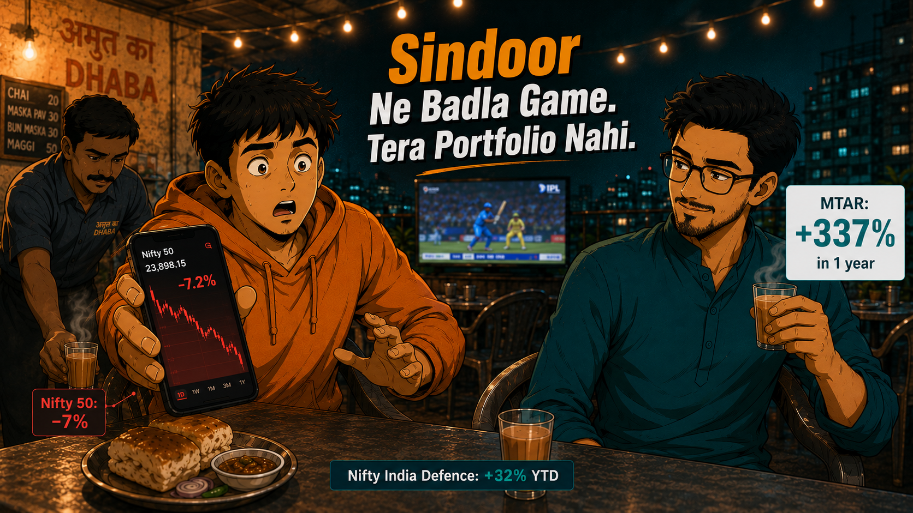

Operation Sindoor ek saal baad: Nifty India Defence +32%, MTAR +337%, Nifty 50 -7%. Retail traders ne kya miss kiya — aur ab kya karna hai.

Rooftop dhaba, Bandra. 9:47 PM. IPL finals on screen, crowd going loud every over — and Teo's portfolio sat red, flat, lifeless. His eyes were on the match but his brain was stuck on one number scrolling past the ticker: +32%.
Neo was beside him, chai going cold, saying nothing yet.
"Yaar, yeh Nifty India Defence kya cheez hai? 32% ek saal mein? Kaisi company hai yeh?" — Teo to Neo, squinting at the ticker like it personally owed him something.
"Company nahi — index hai. Aur 32% sirf index ka number hai. MTAR Technologies ne 337% diya. Ek saal mein." — Neo to Teo, picking up his cold tea without looking up.
"Teeen saaau sathhhattar percent?! Bhai yeh toh mujhe pata hi nahi tha!" — Teo to Neo, voice dropping like someone had just told him the halftime score.
"Nifty 50 ne ek saal mein -7 se -9% diya. Same market, alag sector, alag story." — Neo to Teo, flat. Like reading the weather.
April 22, 2025 — Pahalgam. 26 lives lost to a terror attack on Indian soil. India did not just condemn it.
On the night of May 6–7, India struck back with Operation Sindoor — nine targets across Pakistan and PoK, answered with precision. HAL -built aircraft in the sky. BEL electronic systems on the ground. Every piece of it designed, built, and deployed in India.
For the first time, "Made in India" was not a tagline on a government poster. It was in the sky over enemy territory. The country watched with its chest out.
The market opened 704 points lower the next morning — and closed near flat by afternoon. India had answered. The world had watched. And one sector had just been re-rated in a way no analyst note could have written in advance.
"Seedha bol na yaar — us time toh main dara hua tha. War badhega socha. Nikal gaya main." — Teo to Neo, finally saying the quiet part out loud.
"Budget mein February mein hi likha tha — 7.85 lakh crore defence ke liye, 15.19% jump. Padhne wale samajh gaye the." — Neo to Teo, setting the cup down. One eyebrow up.
"Arrey — yeh toh budget mein tha? Matlab data pehle se available tha?" — Teo to Neo, the realisation arriving slowly, visibly.
"2.19 lakh crore sirf weapons, aircraft, warships ke liye. Yeh paisa BEL, HAL, Mazagon Dock ke orders mein jaata hai. Seedha." — Neo to Teo, unhurried. Final.
The Union Budget February 2025 had already allocated Rs.7.85 lakh crore to defence — the largest ever. Capital outlay of Rs.2.19 lakh crore was earmarked specifically for procurement: weapons, aircraft, warships. That money flows directly into order books of listed defence PSUs. The data was public. The signal was clear. The noise just drowned it out for most.
Sourced from Outlook Business , BusinessToday , and TradingView / MoneyControl :
+32%Nifty India Defence Index — 1 year since May 7, 2025
-7 to -9% Nifty 50 — same period
+337% MTAR Technologies — Rs.1,358 to Rs.6,787
41–68% GSRE , BharatForge , BEL — large-cap outperformers
Rs.2.9L CrMarket cap added — Nifty India Defence constituents
"Chai repeat karu kya, Saab?" — Waiter to Neo, appearing from nowhere, tray in hand, entirely unbothered.
"Haan, ek aur." — Neo to Waiter, without breaking stride.
"Toh ab bhi enter kar sakte hain? Ya yeh FOMO hai mera — price already bhaag gayi?" — Teo to Neo, the question that had been waiting all evening.
"45.72 P/E pe trade ho raha hai index — expensive hai. Lekin 3 lakh crore capital outlay target hai 2029 tak. Ek mahine ki story nahi." — Neo to Teo, not a buy call. A frame to think from.
Thinking about this? Head to our Facebook , YouTube , Instagram , Linkedin post this week — share your take there.
Fear-based selling. The market opened red the morning after Sindoor. Most retail traders sold. Per Business Standard — after Kargil, Nifty was up 16.5% one month later. After Pulwama-Balakot, up 6.3%. In 4 out of 5 India-Pakistan tension events since the 1990s, Nifty was positive at the 6-month mark. The instinct to sell on a geopolitical headline has been wrong more often than right — consistently, historically, with data.
Ignoring the budget signal. The February 2025 budget was a public document. Rs.7.85 lakh crore to defence. Rs.2.19 lakh crore capital outlay. That money had a destination — and that destination had ticker symbols. The signal was not between the lines. It was in the lines.
FOMO entry after the rally. Now, one year later, the same traders who sold in fear are considering buying at 45+ P/E because the chart looks good. Same emotion, different direction, same likely outcome.
"Oh. Teen baar galat kiya — darke becha, budget ignore kiya, ab FOMO mein ghus'ne wala tha." — Teo to Neo, quietly. Phone face-down on the table for the first time all evening.
"News nahi, data dekh." — Neo to Teo, picking up the fresh chai. No drama. The same line — landed differently this time.
Did you sell in May 2025, miss the budget signal, or sitting on FOMO right now? Head to our Instagram or YouTube , Linkedin , Facebook post this week — you are not alone.
IF you want to add defence exposure and are checking whether to enter now →
THEN DO THIS
Go to NSE India and check the current P/E of Nifty India Defence Index. If P/E is above 45 — do not lump sum. Instead open a weekly SIP of minimum Rs.5,000 in Mirae Asset BSE India Defence ETF or Motilal Oswal Nifty India Defence Index Fund . SIP averages your entry across the P/E correction rather than locking you in at the peak. When P/E falls below 38 — that is your lump sum window.
IF a geopolitical event causes Sensex to open down 500+ points and your instinct is to sell →
THEN DO THIS
Do not act on day one. Give the market 48 hours. Set a calendar reminder. Pull up the Business Standard post-event return data for India-Pakistan stress events. In 4 out of 5 similar events, Nifty was positive at 6 months. If after 48 hours the data still says exit — exit with a reason. Not a feeling.
IF a Defence Acquisition Council meeting is announced on PIB.gov.in
THEN DO THIS
Check which sub-sector receives the allocation — naval, air defence, or electronic warfare. Then open the holdings list of Motilal Oswal Nifty India Defence Index Fund. The top 2–3 stocks in that sub-sector typically see volume pick up in the week before quarterly results. Watch volume, not price. Price follows volume — the edge lives in the allocation detail, not the headline.
India ne jawab diya — ek saal pehle. The question now is whether you are reading the next signal the same way you missed the last one.
Know someone who panic-sold in May 2025 or is sitting on defence FOMO right now? Tag them or send this via YouTube , Linkedin , Instagram , Facebook — it might save them from making the same three mistakes twice.